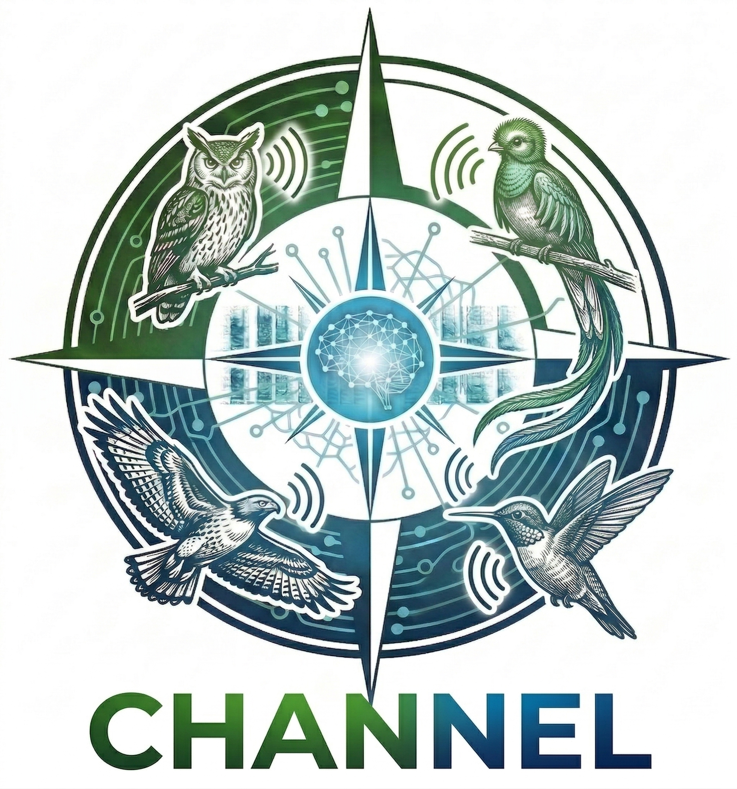

Acerca de CHANNEL v1.0
Procesador Masivo de Audio de Alto Rendimiento
CHANNEL es la solución profesional de vanguardia de BioChavez Forester diseñada para automatizar por completo el flujo de trabajo de bioacústica. Este software trasciende el laboratorio tradicional para ofrecer resultados científicos de alta precisión en tiempo récord.
🚀 Inteligencia Artificial de Alto Rendimiento
🧠 Motor DeepBio-Acoustics by BCF
Impulsado por algoritmos avanzados de redes neuronales convolucionales. El motor cuenta con más de 17,000 firmas sonoras entrenadas, cubriendo una de las bibliotecas taxonómicas más vastas del mundo para una identificación de especies sin precedentes.
⚡ Procesamiento Masivo
Capacidad quirúrgica para analizar terabytes de audio en tiempo récord. Optimizado para flujos de trabajo "zero-code", permitiendo que investigadores se concentren en la ciencia, no en el código.
📈 Visualización Avanzada
Generación automática de espectrogramas de alta resolución para cada detección. Permite la validación visual inmediata de las firmas acústicas de las especies identificadas con total claridad.
📊 Análisis de Índices
Cálculo masivo de índices de complejidad acústica (ACI) y diversidad sonora (NDSI), herramientas fundamentales para el monitoreo pasivo de ecosistemas y salud ambiental.
📑 Automatización de Reportes
Desde el filtrado inteligente de archivos hasta la exportación de reportes científicos en PDF y CSV. Todo diseñado para cumplir con los estándares de publicación académica.
🎯 Precisión Científica
Resultados validados por expertos. El flujo de trabajo de CHANNEL reduce el tiempo de gabinete en un 90% en comparación con métodos manuales tradicionales, sin sacrificar el rigor científico.
🐸🦗 ¡Próximamente: Soporte para Anfibios e Insectos!
Estamos entrenando nuevos modelos acústicos. Muy pronto, CHANNEL también será capaz de procesar y reconocer de forma automática cantos de anuros (ranas y sapos) y estridulaciones de insectos, expandiendo nuestras capacidades para el monitoreo de la biodiversidad.
⚙️ Especificaciones Técnicas
💼 DESCARGA Y LICENCIA
Adquiere la licencia de pago único de CHANNEL para procesar grabaciones bioacústicas masivas de forma local y eficiente. El instalador profesional se encuentra en fase de pruebas piloto avanzadas.
💡 Nota sobre la Activación: Una vez liberado el instalador, podrás descargarlo libremente para validar la compatibilidad en tu hardware. Al igual que FORXIME PRO, la activación de CHANNEL se realiza de forma segura mediante el ID de Hardware único de tu placa base.
🛡️ Aviso de Windows Defender: Al abrir el instalador es posible que veas una pantalla de "Windows protegió su PC" (SmartScreen). El software es 100% seguro y libre de virus. Solo haz clic en "Más información" y luego en el botón "Ejecutar de todas formas".